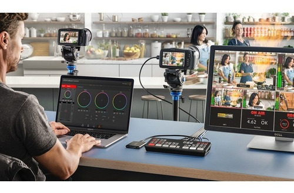
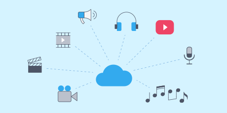

Qué es el Streaming? El streaming en Internet le permite ver vídeos, escuchar música e incluso presenciar acontecimientos en directo desde su PC, portátil, smartphone, tableta o televisión inteligente conectado a Internet. La tecnología de streaming abre la puerta a un mundo de nuevas fuentes de entretenimiento e información.
El streaming es un tipo de tecnología multimedia que envía contenidos de vídeo y audio a su dispositivo conectado a Internet. Esto le permite acceder a contenidos (TV, películas, música, pódcast) en cualquier momento que lo desee, en un PC o un móvil, sin someterse a los horarios del proveedor.El streaming supone un gran cambio en la forma en la que accedemos a los contenidos multimedia. No hace mucho, todos dependíamos de los servicios de las emisoras para acceder a las noticias y al entretenimiento. Usábamos radios y televisores para recibir lo que la emisora quisiera emitir y escuchábamos los programas que ofrecían en su horario. Todo eso ha cambiado con Internet. Ahora podemos consumir la música, las noticias, los programas de TV y las películas que queramos, cuando y donde queramos. Y podemos hacerlo desde casi cualquier dispositivo: smartphone, tableta, PC e incluso la televisión. Todo esto es posible gracias al streaming. La tecnología de streaming marca una diferencia fundamental en la forma de distribuir el contenido. Le facilita ver una película en su PC o escuchar un pódcast en su móvil en el momento en el que lo desee. Y lo mejor de todo es que no tiene que saber nada especial para reproducir una película, está disponible con solo tocar un botón.
Puede escuchar o ver casi cualquier cosa usando la tecnología de streaming. Muchos servicios proporcionan acceso gratuito, otros requieren una suscripción de pago u otro tipo de cuota. Puede encontrar diferentes tipos de servicios de streaming disponibles para eventos en vivo, vídeo y películas, música y juegos.
El streaming en vivo le proporciona acceso a eventos en el momento en que suceden. Los deportes profesionales son algunos de los eventos deportivos más populares de streaming en vivo, pero esta categoría también incluye emisiones de radio y vídeos en vivo de canales de redes sociales como Facebook.
El contenido de streaming más popular es el vídeo. Ya se trate de fragmentos cortos de vídeo o de largometrajes, la mejor forma de verlos es usar un servicio de streaming. YouTube es la fuente de vídeo más conocida, la gente ve unos 5000 millones de vídeos en YouTube cada día. Y se cargan 300 horas de nuevos contenidos en el sitio cada minuto. El bloqueo geográfico hace referencia a los sistemas que controlan el acceso a los contenidos según su ubicación. Este control específico está motivado por el copyright y otras razones. Por ejemplo, algunos servicios proporcionan derechos para mostrar cierta película a audiencias de EE. UU., pero no en Europa (o viceversa).
Es fácil escuchar música desde servicios de streaming, tanto gratuitos como por suscripción. Lo único que necesita es registrase en un sitio como Apple Music o Spotify. Puede encontrar rápidamente la música de un artista, si sabe lo que desea escuchar o bien seleccionar un género y descubrir nuevas canciones. Algunos sitios de streaming de música le ofrecen sugerencias según sus hábitos anteriores de escucha y las canciones que ha dicho que le han gustado.
También puede utilizar el streaming para los videojuegos interactivos. Antes podía comprar un juego en un medio físico y jugarlo o instalarlo en su videoconsola o su PC. De los juegos físicos se pasó a la descarga, pero aún tenía que jugar en su dispositivo local; y ocupar más de su preciado espacio de almacenamiento en disco. Ahora puede jugar en streaming y elegir juegos de una completa biblioteca. Puede adquirir un título o pagar una suscripción para acceder a una amplia gama de juegos. Puede jugar en su PC, tableta o smartphone; siempre que disponga de una conexión a Internet. La selección de juegos va de los sencillos rompecabezas y juegos de acción hasta los juegos más vendidos. Existen servicios de streaming de juegos para aquellos que desean explorar hasta proveedores con sus propios sitios de juegos en streaming.
El streaming de medios en Internet puede ser fantástico, pero existen algunas cosas que hay que tener en cuenta. Como mencionamos anteriormente, el almacenamiento en búfer puede ser un problema. Si los datos llegan a su dispositivo a una velocidad menor que la de reproducción, tendrá problemas con esta; se detendrá y continuará constantemente, ya que el sistema debe ponerla en pausa para adquirir los datos. Por ejemplo, Netflix recomienda disponer de un servicio de acceso a Internet de al menos 5 Mbit/s para ver películas en alta definición. Si su conexión es más lenta, Netflix reduce la resolución de la imagen para evitar retrasos en la carga, pero esto no sucede con todos los servicios de streaming. Afortunadamente, puede seguir algunos pasos para reducir problemas de búfer. Cada vez que accede a información en línea, debe cuidar su seguridad. No hay razones para preocuparse con los principales servicios, como Amazon o Netflix. Sin embargo, puede que corra algún riesgo al usar otros sitios, así que debería pensar en usar una buena herramienta antimalware, como Avast Free Antivirus para proteger su dispositivo y sus datos.